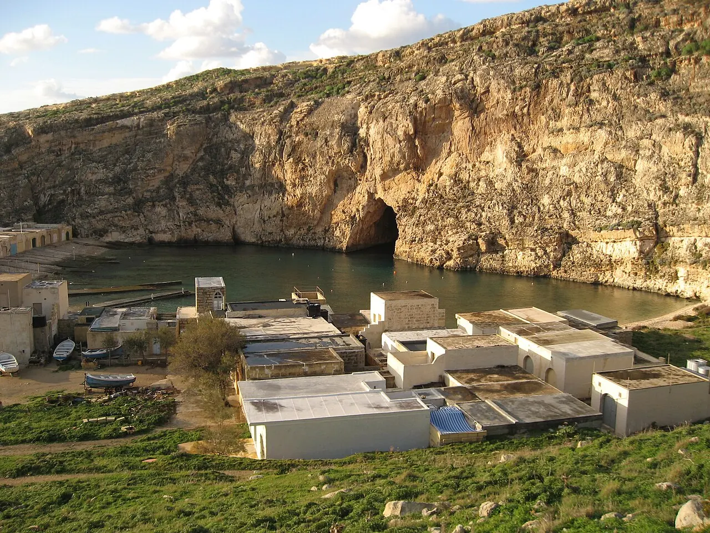

The parish square
The church is a reference point for the inland village. For local services and notices, the council lists its office on Lady of Sorrow Street.
Western Gozo
A village square inland, an enclosed lagoon on the coast. Plan time for the parish and nearby craft workshops, then follow the land connection to Dwejra.

The church is a reference point for the inland village. For local services and notices, the council lists its office on Lady of Sorrow Street.
Visit Gozo places the craft village beside San Lawrenz. INDIS Malta describes a cluster of workshops where artisans make goods and sell them to visitors. Check current studio hours before going.
Kempinski Hotel San Lawrenz lists this gastrobar at its resort and says its restaurants welcome non-hotel guests. Check the current menu and service hours with the hotel.
Dwejra’s Inland Sea is a seawater lagoon linked to the open sea through an opening in the cliff. Reach the lagoon by land. Visit Gozo lists boat trips from the Inland Sea as a separate activity. Check locally for operations and conditions on the day.
Fungus Rock is a separate coastal landmark, and the Azure Window collapsed in 2017. Visit Gozo’s Dwejra guide identifies each feature. If you are planning to visit Dwejra Tower, check Din l-Art Ħelwa for current arrangements.
Route 311 connects Victoria and Dwejra through Għarb and San Lawrenz. The operator lists the coastal stop as Dwejra 1991 and also identifies San Lawrenz among the stops on route 312. Choose the parish square or the coast as your destination before checking the journey planner.
The marker shows the church footprint in the inland village of San Lawrenz.
Map data © OpenStreetMap contributors.
Editorial sources reviewed 17 November 2026.
Nexus Marketplace
See local homes and explore food, shops and everyday places around the neighbourhood.
Mapped places within 2 km of the centre. This can include nearby neighbourhoods.